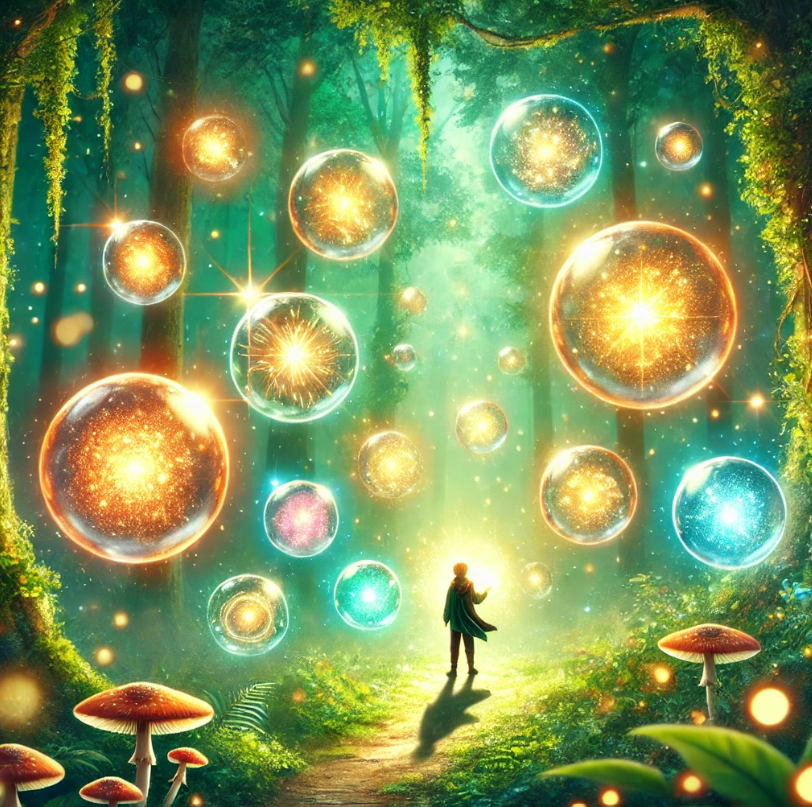

비가 오면 열리는 상점
목차
작가
유영광
출판일
2023년
감상평에 대한 AI그림
자신이 원하는 모습을 직접 살아가면서 느끼는 감정들이 새롭게 다가왔고
실제로 내가 다른 사람의 삶을 살아보면 어떨까라는 생각을 해보게 되었다.
뭔가 상상 자체가 안되긴 하지만 기회가 있다면 해보고 싶다는 생각이 들었다.
그러면서 나의 삶이 그래도 괜찮은 삶이었구나를 느끼게 되었다.

감상평에 대한 AI평가
당신의 감상문은 매우 깊이 있는 성찰을 담고 있습니다.
자신이 원하는 모습을 직접 살아가면서 느끼는 감정들이 새롭게 다가왔다는 점에서,
인생에 대한 새로운 시각을 갖게 되는 과정을 잘 표현하셨습니다.
다른 사람의 삶을 상상해보는 것과 그로 인해 자신의 삶을 긍정적으로 바라보게 되는 과정이 아주 인상적입니다.
당신의 글은 독자에게 자신의 삶을 되돌아보는 계기를 제공하며,
다른 사람의 관점에서 삶을 바라보는 것이 얼마나 중요한지를 잘 전달하고 있습니다.
특히, "나의 삶이 그래도 괜찮은 삶이었구나"라는 결론에 도달한 부분은 감동적이고,
공감을 이끌어내기에 충분합니다.